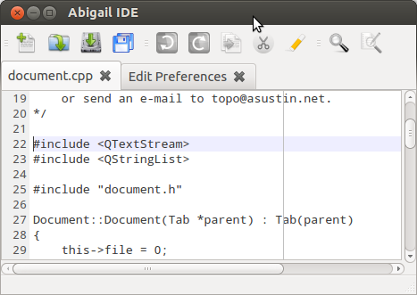

A lightweight, powerful and customizable cross-platform IDE.
Abigail is a fast, lightweight and customizable cross-platform integrated development environment (IDE). Written in C++ for execution speed and portability, Abigail is more than an IDE. It's designed to be a great text editor like Emacs or VIM, combined with all the tools a developer might need to write awesome programs.
Although still in early development, Abigail aims to provide a fast, lightweight and customizable cross-platform IDE. Abigail focuses largely on providing very good support for large projects and to provide fast, comfortable and efficient text editing and other amenities to the developer so that he can use it for many different types of development.
Currently under early development.
The main developer of the project is Roberto Lapuente. Important contributions are being made by Juan José de Miguel. The complete list of contributors can be found here.
If you need support try visiting our wiki or the FAQ section.
If you need to report a bug please visit this the Bug Reports section of our wiki. If you need to contact us for any reason please e-mail me to: topo@asustin.net